- 狗狗百科

狗狗百科(点击跳转知识百科)
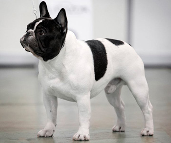
法国斗牛犬
法国斗牛犬亲切，敦厚，忠诚，执著，勇敢，具有独特的品位，而且完全表露于表情与动作。对小孩和善，同时也是作风彪悍，能力强，对于新鲜事物有极强的好奇心的优秀玩具犬。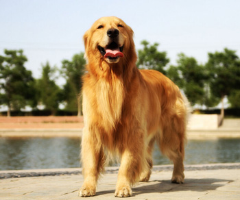
金毛寻回犬
金毛寻回猎犬体格健壮，工作热心，可以用来捕捉水鸟，任何气候下都能在水中游泳。深受猎手的喜爱，主要被作为家犬饲养，为大型犬。它也是人类忠实、友善的家庭朋友，也可训练为优秀的导盲犬。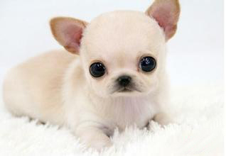
吉娃娃
吉娃娃犬不仅是可爱的小型宠物犬，同时也具备大型犬的狩猎与防范本能，具有类似梗类犬的气质。此犬分为长毛种和短毛种。这种狗体型娇小，对其他狗不胆怯，对待主人极有独占心。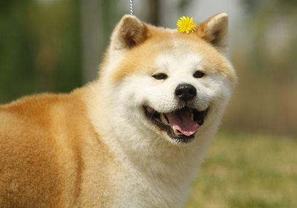
日本秋田犬
秋田犬是日本国犬，它的祖先，被称呼为山地狩猎犬。本来在日本犬里大型犬是不存在的，秋田犬是大型的熊猎犬。日系秋田犬腿较长，身形属细长，毛多为两色。美系秋田犬腿较短粗，整体的身形比日系壮实，毛多为白黑棕三色。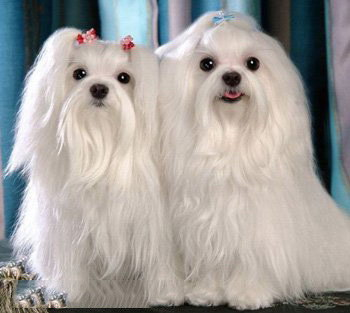
马尔济斯犬
玛尔济斯犬是从头到脚披着白色丝状长毛的玩具犬。它的态度文雅而深情、热切而行动活泼，尽管体型小却具有令人满意的作为伴侣犬所需的精力。玛尔济斯犬是温和的小犬，全家的宠物。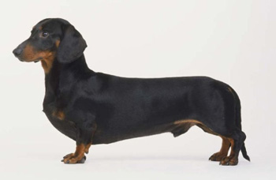
腊肠犬
肠犬(Dachshund)是一种短腿，长身的猎犬。其名源于德国，原意"獾狗"。此品种被发展为嗅猎，追踪，及捕杀獾类及其他穴居的动物。因为腊肠犬的天性独立自主，所以照顾起来很容易，主人下达的指令也都会迅速理解遵从。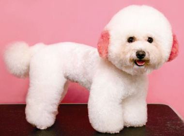
比熊犬
比熊犬性情温顺、敏感、顽皮又不乏可爱。整体外貌而言，比熊犬体型较小，但身体强壮，活泼可爱，长满蓬松毛发的小尾巴竖在背后，长着一双萌动而又好奇的黑眼睛，它的动作优雅，轻灵惹人欢喜。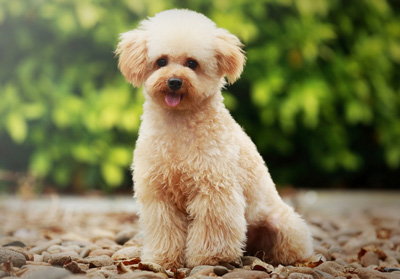
贵宾犬
贵妇犬也可称“卷毛狗”，属于非常聪明的且喜欢狩猎的犬种，贵妇犬聪明，活泼，性情优良，极易近人，是一种忠实的犬种。 分为标准型、迷你型、玩具犬 三种。一般而言，标准型贵妇犬是三种类型中最健康的犬种。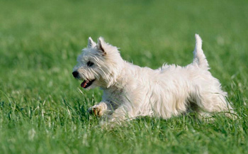
西高地白梗
西高地白梗起源于19世纪，是来自苏格兰西部高地的纯白色梗类。在外貌上有点像狐狸，鼻梁较长据说所有苏格兰梗都是由一个共同祖先继承下来，然后再分布到英国各地。西高地最初用来捕猎水獭，狐狸和老鼠。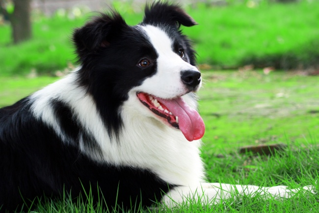
边境牧羊犬
边境牧羊犬(英语：Border-Collie)，又名苏格兰牧羊犬，是一种原产自苏格兰和英格兰边界一带的牧羊犬，主要协助农场放牧，故称「牧羊犬」。边境牧羊犬以精力旺盛且容易学习杂技运动而闻名，且被学界认为是最聪明的犬种。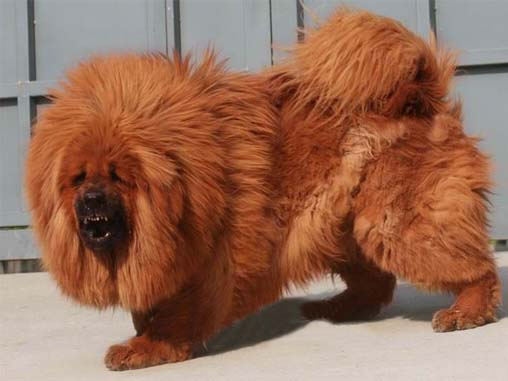
藏獒
藏獒作为最为异常凶猛的护卫犬，藏獒非常不适合在人群密集地和空间狭小的地区饲养。它们独立，服从命令，对自己的主人和领地极为忠诚。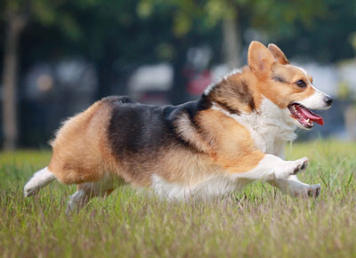